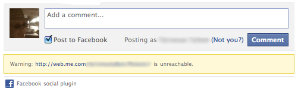

Facebook comments
Choose Facebook from the comments provider popup. If you do not have an App ID, click the 'Register Site…' button.
Fill in the required fields, you will then be given your App ID.
Troubleshooting
After setting up Facebook Comments and publishing your site, you might see a warning after the comments area that says that Facebook cannot contact your site.

Usually, the warning message appears because the site url and domain in the app page were left blank.
To fix the issue, do the following:
- Log into Facebook and go to http://www.facebook.com/developers/apps.php.
- At the Edit App page, click the “Web Site” tab at the left sidebar to view the “Core Settings.”
- Put your site's URL and Domain in the corresponding box.
- Click Save Changes.